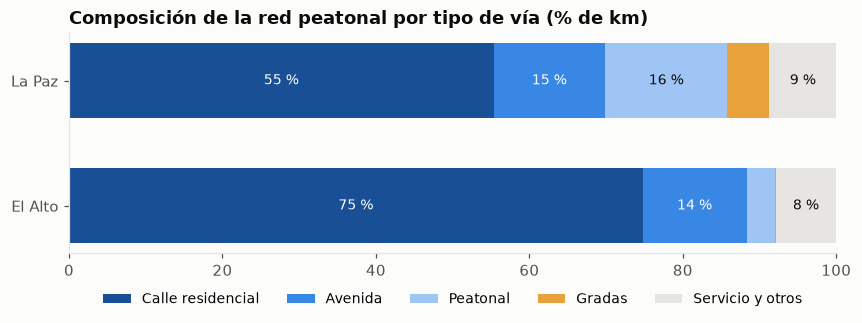
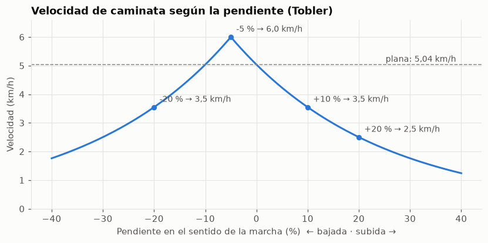
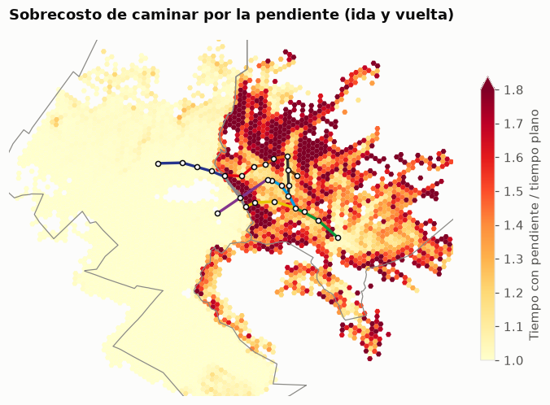

02 · Red peatonal con pendiente: ¿cuánto cuesta caminar en La Paz y El Alto?
Pregunta: ¿cómo es la red por la que la gente camina hasta el teleférico y cuánto cambia el tiempo de caminata cuando se considera la pendiente, en una ciudad que va de ~3.000 a ~4.100 m?
Fuentes (ver docs/plan.md §4): - Red peatonal de OpenStreetMap (network_type="walk" de OSMnx), en teleferico.ingest.osm. - Copernicus GLO-30 (DEM de 30 m) para la elevación, en teleferico.ingest.dem. - Censo 2024 (manzanos) y límites de OSM, para normalizar la red por población y área.
Método (teleferico.access): - Velocidad de Tobler, v = 6·exp(−3.5·|s + 0.05|) km/h, direccional: s es la pendiente en el sentido de la marcha, así que subir y bajar la misma calle cuestan distinto. La caminata “plana” usa la misma función con s = 0 (≈ 5,04 km/h), para que la única diferencia entre ambas sea la pendiente. - La pendiente se mide a lo largo de la calle, no solo entre sus extremos: se muestrea el DEM cada 30 m sobre la geometría de cada arista y el tiempo es la suma de los tramos.
Ver código
import geopandas as gpdimport h3import matplotlib.pyplot as pltimport matplotlib.ticker as mtickerimport numpy as npimport pandas as pdfrom shapely.geometry import Polygonfrom teleferico import access as acfrom teleferico import vizfrom teleferico.config import CRS_METRIC, CRS_WGS84, PROCESSEDviz.estilo()pd.set_option("display.float_format", lambda x: f"{x:,.2f}")nod = ac.nodos()a = ac.aristas_tiempo().to_crs(CRS_METRIC)lim = gpd.read_parquet(PROCESSED /"limites.parquet").to_crs(CRS_METRIC)mun = lim.query("nivel == 'municipio'")est = gpd.read_parquet(PROCESSED /"red"/"estaciones.parquet").to_crs(CRS_METRIC)lineas = gpd.read_parquet(PROCESSED /"red"/"lineas.parquet").to_crs(CRS_METRIC)mz = gpd.read_parquet(PROCESSED /"censo"/"manzanos.parquet", columns=["municipio", "personas", "area_m2", "geometry"])bounds = mz.to_crs(CRS_METRIC).total_bounds + np.array([-800, -800, 800, 800])# El grafo peatonal tiene cada calle en los dos sentidos: para longitudes se usa un solo sentido.uno = a[a["u"] < a["v"]].copy()medio = uno.geometry.interpolate(0.5, normalized=True)uno["municipio"] = (gpd.GeoDataFrame(geometry=medio, crs=CRS_METRIC) .sjoin(mun[["nombre", "geometry"]], how="left", predicate="within") .groupby(level=0)["nombre"].first().fillna("Fuera (margen)"))# Pendiente media absoluta a lo largo del perfil (no la neta entre extremos).uno["pend_perfil"] = (uno["subida_m"] + uno["bajada_m"]) / uno["length"]print(f"{len(nod):,} nodos · {len(a):,} aristas dirigidas · {uno['length'].sum() /1000:,.0f} km de calles")
89,564 nodos · 269,006 aristas dirigidas · 8,523 km de calles
1. La red: ¿qué tan completa es OSM en cada municipio?
El plan identifica un riesgo: OSM podría tener El Alto peor mapeado que La Paz (calles sin mapear o senderos informales). Se compara la longitud de la red con la población y con el área de los manzanos.
Ver código
def tipo_via(h: str) ->str:if"steps"in h:return"Gradas"ifany(k in h for k in ("footway", "path", "pedestrian", "living_street")):return"Peatonal"ifany(k in h for k in ("trunk", "primary", "secondary", "tertiary")):return"Avenida"ifany(k in h for k in ("residential", "unclassified")):return"Calle residencial"return"Servicio y otros"uno["tipo"] = uno["highway"].map(tipo_via)mz_mun = mz.groupby("municipio").agg(personas=("personas", "sum"), area_km2=("area_m2", lambda s: s.sum() /1e6))km = uno.groupby("municipio")["length"].sum() /1000red = mz_mun.assign(km_red=km).dropna()red["m_red_por_hab"] = red["km_red"] *1000/ red["personas"]red["km_red_por_km2_manzanos"] = red["km_red"] / red["area_km2"]mix = (uno.pivot_table(index="municipio", columns="tipo", values="length", aggfunc="sum") .pipe(lambda d: d.div(d.sum(axis=1), axis=0) *100).loc[red.index])pd.concat([red, mix.add_prefix("% ")], axis=1).T
municipio
El Alto
La Paz
personas
885,210.00
750,225.00
area_km2
119.93
62.19
km_red
5,077.73
2,726.78
m_red_por_hab
5.74
3.63
km_red_por_km2_manzanos
42.34
43.85
% Avenida
13.55
14.52
% Calle residencial
74.76
55.34
% Gradas
0.10
5.46
% Peatonal
3.69
15.97
% Servicio y otros
7.91
8.71
Ver código
fig, ax = plt.subplots(figsize=(9, 2.6))orden = ["Calle residencial", "Avenida", "Peatonal", "Gradas", "Servicio y otros"]colores =dict(zip(orden, [viz.SECUENCIAL[5], viz.SECUENCIAL[3], viz.SECUENCIAL[1], "#e8a23c", viz.GRILLA]))izq = np.zeros(len(mix))for t in orden: ax.barh(mix.index, mix[t], left=izq, color=colores[t], label=t, height=0.6)for i, (x0, w) inenumerate(zip(izq, mix[t])):if w >6: ax.text(x0 + w /2, i, f"{w:.0f} %", ha="center", va="center", fontsize=9, color="white"if t in orden[:2] else viz.TINTA) izq += mix[t].to_numpy()ax.set_xlim(0, 100)ax.grid(False)ax.legend(ncol=5, loc="upper center", bbox_to_anchor=(0.5, -0.12), fontsize=9)ax.set_title("Composición de la red peatonal por tipo de vía (% de km)")viz.guardar(fig, "02_tipos_via")plt.show()

Lectura: - La red tiene ~8.500 km de calles: 5.078 km en El Alto y 2.727 km en La Paz. - Por persona, El Alto tiene más red (5,7 m/hab frente a 3,6 m/hab) y, por km² de manzanos, las dos tienen casi la misma densidad (42 y 44 km/km²). No hay señal de que OSM tenga El Alto peor mapeado, al menos en longitud. Sí puede faltar algún sendero informal, y eso no se puede detectar así. - La forma de caminar es distinta: en La Paz el 5,5 % de la red son gradas y el 16 % pasajes peatonales (escalinatas, sendas en ladera); en El Alto son el 0,1 % y el 3,7 %. El Alto es una cuadrícula de calles residenciales (75 %).
2. Elevación y pendiente
Ver código
fig, axs = plt.subplots(1, 2, figsize=(12, 6.2))ax = axs[0]sc = ax.scatter(nod.geometry.x, nod.geometry.y, c=nod["elevation"], s=0.3, cmap="cividis", rasterized=True)viz.mapa_base(ax, mun, lineas, est, bounds)fig.colorbar(sc, ax=ax, shrink=0.6, label="Elevación (m s. n. m.)")ax.set_title("Elevación de los nodos de la red")ax = axs[1]cortes = [0, 0.05, 0.10, 0.20, np.inf]etiquetas = ["< 5 %", "5-10 %", "10-20 %", "> 20 %"]uno["clase_pend"] = pd.cut(uno["pend_perfil"], cortes, labels=etiquetas, right=False)paleta =dict(zip(etiquetas, [viz.GRILLA, viz.SECUENCIAL[2], viz.SECUENCIAL[4], viz.SECUENCIAL[6]]))for c in etiquetas: g = uno[uno["clase_pend"] == c] g.plot(ax=ax, color=paleta[c], lw=0.35if c == etiquetas[0] else0.6, rasterized=True, label=c)viz.mapa_base(ax, mun, None, est, bounds)ax.legend(title="Pendiente media", loc="lower right", fontsize=9, markerscale=3)ax.set_title("Pendiente media de cada calle (perfil cada 30 m)")viz.guardar(fig, "02_elevacion_pendiente")plt.show()
Lectura: - Son dos ciudades topográficamente opuestas. El 94 % de las calles de El Alto tiene menos de 5 % de pendiente (altiplano, ~3.930-4.120 m). En La Paz, el 55 % de las calles supera el 10 % y el 17 % supera el 20 %, con ~790 m de desnivel entre el sur (p5 ≈ 3.285 m) y las laderas altas (p95 ≈ 4.070 m). - Las estaciones de La Paz están en el fondo del valle y en las laderas bajas; las de El Alto, sobre el borde del altiplano (la Ceja). En La Paz, llegar a pie a una estación implica casi siempre subir o bajar.
3. La función de Tobler: subir cuesta mucho más que bajar
Ver código
s = np.linspace(-0.4, 0.4, 161)fig, ax = plt.subplots(figsize=(9, 3.8))ax.plot(s *100, ac.tobler_kmh(s), color=viz.ACENTO)ax.axhline(ac.V_PLANA_KMH, color=viz.TINTA_3, lw=1, ls="--")ax.text(39, ac.V_PLANA_KMH +0.1, f"plana: {viz.num(ac.V_PLANA_KMH, 2)} km/h", ha="right", fontsize=9, color=viz.TINTA_2)for p in (-0.05, 0.10, 0.20, -0.20): v =float(ac.tobler_kmh(p)) ax.plot(p *100, v, "o", color=viz.ACENTO, ms=5) ax.annotate(f"{p *100:+.0f} % → {viz.num(v, 1)} km/h", (p *100, v), xytext=(6, 6), textcoords="offset points", fontsize=9, color=viz.TINTA_2)ax.set_xlabel("Pendiente en el sentido de la marcha (%) ← bajada · subida →")ax.set_ylabel("Velocidad (km/h)")ax.set_ylim(0, 6.6)ax.set_title("Velocidad de caminata según la pendiente (Tobler)")viz.guardar(fig, "02_tobler")plt.show()p = np.array([-0.30, -0.20, -0.10, -0.05, 0, 0.05, 0.10, 0.20, 0.30])pd.DataFrame({"pendiente_%": p *100,"km_h": ac.tobler_kmh(p),"min_por_100m": 100/ (ac.tobler_kmh(p) /3.6) /60,"vs_plana": ac.V_PLANA_KMH / ac.tobler_kmh(p),}).set_index("pendiente_%")

km_h
min_por_100m
vs_plana
pendiente_%
-30.00
2.50
2.40
2.01
-20.00
3.55
1.69
1.42
-10.00
5.04
1.19
1.00
-5.00
6.00
1.00
0.84
0.00
5.04
1.19
1.00
5.00
4.23
1.42
1.19
10.00
3.55
1.69
1.42
20.00
2.50
2.40
2.01
30.00
1.76
3.40
2.86
4. Perfil a lo largo de la calle frente a la pendiente neta, y sensibilidad al DEM
Copernicus GLO-30 es un modelo de superficie (DSM): incluye techos y vegetación. Al muestrear cada 30 m, los techos aparecen como “baches” de pocos metros que se leen como subidas y bajadas falsas y alargan el tiempo. Por eso el DEM se suaviza con un filtro gaussiano (σ = 1 píxel) antes de muestrear. Se compara el tiempo total de la red con distintas decisiones:
Lectura: - Con la pendiente neta entre extremos, caminar toda la red cuesta un 11,6 % más que en llano. Con el perfil cada 30 m y el DEM suavizado (σ = 1, la opción elegida) cuesta un 18,4 % más: la pendiente neta subestima el costo porque ignora las calles que bajan y vuelven a subir. - El resultado depende de cómo se trate el ruido del DSM: sin suavizar y con paso de 15 m el sobrecosto sube al 33 % (el desnivel acumulado es 1,66 veces el neto, en buena parte por techos). Con paso de 60 m baja al 13-15 %. La opción elegida queda en el medio del rango y respeta la resolución del DEM (30 m). En el notebook 03 se mide cómo cambia la cobertura con estas variantes.
Asimetría: el mismo tramo de subida y de bajada
En Tobler, para una misma pendiente mayor al 5 %, subir es siempre exp(0,35) ≈ 1,42 veces más lento que bajar. Pero bajar una pendiente fuerte también es más lento que caminar en llano (−20 % → 3,5 km/h).
Lectura: en La Paz, recorrer las calles en el sentido de subida cuesta un 66 % más que en llano y en el de bajada un 33 % más. La mitad de los km (50 %) tiene una diferencia de más de 1,25× entre ir y volver. En El Alto la diferencia es mínima (+7 % / −4 %).
5. ¿Dónde pesa la pendiente? Sobrecosto de caminar por hexágono
Para cada hexágono H3 (res. 9, ~0,1 km²) se compara el tiempo de recorrer todas sus calles en ambos sentidos con pendiente frente a plano. Un valor de 1,3 significa caminar un 30 % más lento que en llano.
Ver código
a_ll = a.geometry.interpolate(0.5, normalized=True).to_crs(CRS_WGS84)a["h3"] = [h3.latlng_to_cell(y, x, 9) for x, y inzip(a_ll.x, a_ll.y)]hx = a.groupby("h3")[["t_pendiente_s", "t_plana_s", "length"]].sum()hx = hx[hx["length"] >300] # hexágonos con poca red dan razones ruidosashx["sobrecosto"] = hx["t_pendiente_s"] / hx["t_plana_s"]hx = gpd.GeoDataFrame(hx, geometry=[Polygon([(lng, lat) for lat, lng in h3.cell_to_boundary(c)]) for c in hx.index], crs=CRS_WGS84).to_crs(CRS_METRIC)fig, ax = plt.subplots(figsize=(8, 7.5))hx.plot(ax=ax, column="sobrecosto", cmap="YlOrRd", vmin=1, vmax=1.8, legend=True, legend_kwds={"shrink": 0.55, "label": "Tiempo con pendiente / tiempo plano"})viz.mapa_base(ax, mun, lineas, est, bounds)ax.set_title("Sobrecosto de caminar por la pendiente (ida y vuelta)")viz.guardar(fig, "02_sobrecosto_pendiente")plt.show()hx["sobrecosto"].describe(percentiles=[0.1, 0.5, 0.9])

count 3,811.00
mean 1.22
std 0.33
min 1.00
10% 1.00
50% 1.02
90% 1.72
max 3.43
Name: sobrecosto, dtype: float64
Lectura: - Las laderas de La Paz (norte y noreste: Max Paredes y Periférica; oeste: Cotahuma; los bordes del sur) llegan a 1,6-1,8 veces el tiempo plano, es decir, se camina a 3 km/h o menos. - El fondo del valle (centro, el Prado, la zona sur baja) y todo El Alto quedan cerca de 1,0. - La mediana de los hexágonos es 1,02 porque la mayoría está en El Alto; el p90 es 1,72.
6. Validación con rutas de referencia
El plan pide validar 3 rutas contra Google Maps a pie. Se calculan 4 rutas típicas en ambos sentidos. La columna google_maps_min queda para completar a mano (Google Maps no ofrece una API abierta para esto); como referencia, Google Maps asume ~5 km/h y no distingue subida de bajada, así que debería parecerse a la variante plana más que a la de pendiente.
Ver código
pt = est.to_crs(CRS_WGS84).set_index("slug").geometrylugares = {"Plaza Murillo": (-68.1336, -16.4958),"Plaza Abaroa": (-68.1268, -16.5106),"Est. Central": (pt["estacion_central"].x, pt["estacion_central"].y),"Est. Cementerio": (pt["cementerio"].x, pt["cementerio"].y),"Est. 16 de Julio (Ceja)": (pt["16_de_julio"].x, pt["16_de_julio"].y),"Est. Plaza La Paz": (pt["plaza_la_paz"].x, pt["plaza_la_paz"].y),}rutas = [("Plaza Murillo", "Est. Central"), ("Plaza Abaroa", "Plaza Murillo"), ("Est. Cementerio", "Est. 16 de Julio (Ceja)"), ("Est. 16 de Julio (Ceja)", "Est. Plaza La Paz")]filas = []for o, d in rutas:for x, y in ((o, d), (d, o)): r = ac.ruta(a, nod, lugares[x], lugares[y]) filas.append({"ruta": f"{x} → {y}", "km": r["km_pendiente"], "desnivel_m": r["desnivel_m"],"min_plana": r["min_plana"], "min_pendiente": r["min_pendiente"],"google_maps_min": np.nan})val = pd.DataFrame(filas).set_index("ruta")val["pendiente_vs_plana"] = val["min_pendiente"] / val["min_plana"]val.round(2)
km
desnivel_m
min_plana
min_pendiente
google_maps_min
pendiente_vs_plana
ruta
Plaza Murillo → Est. Central
1.37
63.13
16.55
20.22
NaN
1.22
Est. Central → Plaza Murillo
1.37
-63.13
16.55
16.87
NaN
1.02
Plaza Abaroa → Plaza Murillo
2.16
85.80
25.90
31.78
NaN
1.23
Plaza Murillo → Plaza Abaroa
2.26
-85.80
25.90
27.62
NaN
1.07
Est. Cementerio → Est. 16 de Julio (Ceja)
2.25
318.05
25.45
50.87
NaN
2.00
Est. 16 de Julio (Ceja) → Est. Cementerio
2.25
-318.05
25.45
39.42
NaN
1.55
Est. 16 de Julio (Ceja) → Est. Plaza La Paz
2.28
-33.72
27.80
26.72
NaN
0.96
Est. Plaza La Paz → Est. 16 de Julio (Ceja)
2.28
33.72
27.80
29.35
NaN
1.06
Lectura: - En rutas cortas del centro de La Paz, la pendiente agrega un 20-23 % de subida (Plaza Murillo está ~60-90 m más alta que la Estación Central y que Plaza Abaroa) y apenas un 2-7 % de bajada. - El caso extremo es la ladera hacia la Ceja: de la estación Cementerio a 16 de Julio (318 m de desnivel en 2,25 km) se tardan ~51 min subiendo frente a ~25 min en llano (2×) y ~39 min bajando. Es justamente el trayecto que el teleférico (línea Roja) hace en ~10 minutos. - En El Alto, la pendiente cambia el tiempo en ±5 %. - Pendiente: validar a mano con Google Maps a pie (columna google_maps_min). Se espera que Google esté más cerca de la variante plana, porque no penaliza las subidas.
7. Conclusiones
#
Hallazgo
Implicación
1
OSM tiene una densidad de red similar en El Alto y La Paz por km² urbanizado (42 y 44 km/km²)
El riesgo de “El Alto mal mapeado” no se ve en los datos. Se mantiene como limitación para senderos informales
2
El 55 % de las calles de La Paz tiene más de 10 % de pendiente; en El Alto, el 94 % tiene menos de 5 %
La pendiente solo debería cambiar la cobertura en La Paz
3
Subir una calle en La Paz cuesta un 66 % más que en llano; bajarla, un 33 % más
Las isócronas deben ser direccionales (de la casa a la estación), no simétricas
4
El perfil cada 30 m da un sobrecosto de 18 % frente al 12 % de la pendiente neta (rango 13-33 % según el tratamiento del DSM)
Se adopta el perfil con σ = 1 y se reporta la sensibilidad en el notebook 03
5
Ladera Cementerio → Ceja: 51 min a pie de subida frente a ~10 min en cable
Ilustra el valor del teleférico en las laderas: ahí la caminata es más cara
Siguiente paso (notebook 03): con estos tiempos por arista, calcular el tiempo de cada manzano a la estación más cercana y la población cubierta a 5, 10, 15 y 20 minutos.